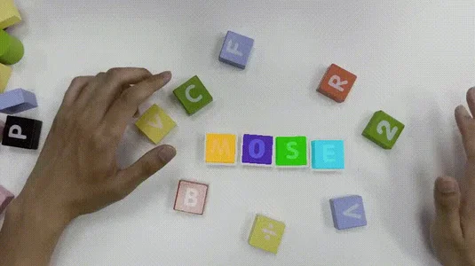
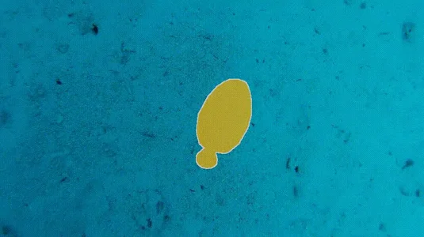
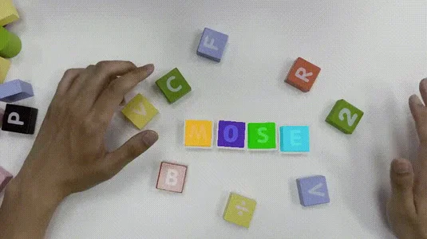
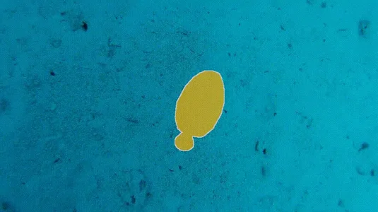

Video object segmentation (VOS) aims to segment specified target objects throughout a video. Although state-of-the-art methods have achieved impressive performance (e.g., 90+% J&F ) on existing benchmarks such as DAVIS and YouTube-VOS, these datasets primarily contain salient, dominant, and isolated objects, limiting their generalization to real-world scenarios. To advance VOS toward more realistic environments, coMplex video Object SEgmentation (MOSEv1) was introduced to facilitate VOS research in complex scenes. Building on the strengths and limitations of MOSEv1, we present MOSEv2, a significantly more challenging dataset designed to further advance VOS methods under real-world conditions. MOSEv2 consists of 5,024 videos and over 701,976 high-quality masks for 10,074 objects across 200 categories. Compared to its predecessor, MOSEv2 introduces significantly greater scene complexity, including more frequent object disappearance and reappearance, severe occlusions and crowding, smaller objects, as well as a range of new challenges such as adverse weather (e.g., rain, snow, fog), low-light scenes (e.g., nighttime, underwater), multi-shot sequences, camouflaged objects, non-physical targets (e.g., shadows, reflections), scenarios requiring external knowledge, etc. We benchmark 20 representative VOS methods under 5 different settings and observe consistent performance drops. For example, SAM2 drops from 76.4% on MOSEv1 to only 50.9% on MOSEv2. We further evaluate 9 video object tracking methods and find similar declines, demonstrating that MOSEv2 presents challenges across tasks. These results highlight that despite high accuracy on existing datasets, current VOS methods still struggle under real-world complexities.

 


